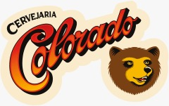
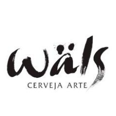

Agora que você está dentro dessa grande comunidade de criadores, está na hora de você dar seu primeiro passo!
Lembre-se uma cerveja nova pode demorar de 25 a 45 dias para ser feita
Veja logo abaixo quais foram as cervejas criadas e se inspire com os destaques
Caso queria conhecer alguns dos nossos parceiros

